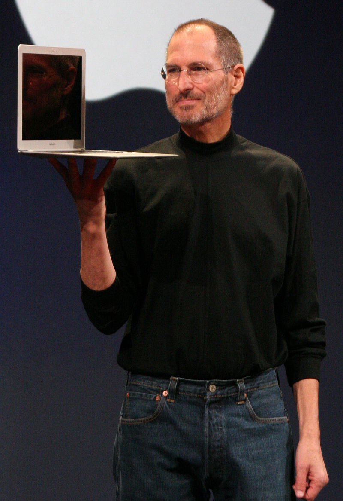

<!DOCTYPE html>
<html lang="en">
    <head>
        <meta charset="utf-8">
        <title>Tribute page</title>
        <link href="Tribute.css" rel="stylesheet" type="text/css">
        <script></script>
        <main id="main">
            <h1 id="title">Steve Jobs</h1>
            <p>Our Hero and Role model</p>
            <figure id="img-div">
                
                <figcaption id="img-caption">
                    Jobs holding up a MacBook Air at the MacWorld Conference & Expo in 2008
                </figcaption>    
            </figure>
            <section id="tribute-info">
                <h3 id="headline">Here's a time line of Steve Job's life:</h3>
                <ul>
                    <li>
                      <strong>1955</strong> - Born  in San Francisco, California.He lived with his adoptive family in Mountain View, 
                      California, within the area that would later become known as Silicon Valley
                    </li>
                    <li>
                      <strong>1967</strong> - The Jobs family used their savings to buy a new home, allowing Jobs to change schools. 
                      The new house (a three-bedroom home on Crist Drive in Los Altos, California) was in the better Cupertino School 
                      District, Cupertino, California
                    </li>
                    <li>
                      <strong>1968</strong> - When he was 13, Jobs was given a summer job by Bill Hewlett (of Hewlett-Packard) after 
                      Jobs cold-called him to ask for parts for an electronics project.The location of the Los Altos home meant that 
                      Jobs would be able to attend nearby Homestead High School, which had strong ties to Silicon Valley
                    </li>
                    <li>
                      <strong>1971</strong> - By his senior year in late 1971, he was taking freshman English class at Stanford and 
                      working on a Homestead underground film project with Chrisann Brennan(his first girlfriend) Around that time, 
                      Wozniak(his best friend) designed a low-cost digital "blue box" to generate the necessary tones to manipulate 
                      the telephone network, allowing free long-distance calls. Jobs decided then to sell them and split the profit with Wozniak
                    </li>
                    <li>
                      <strong>1972</strong> - Jobs enrolled at Reed College in Portland, Oregon after just one semester, Jobs dropped 
                      out of Reed College without telling his parents. Jobs later explained that he decided to drop out because he did 
                      not want to spend his parents' money on an education that seemed meaningless to him
                    </li>
                    <li>
                      <strong>1975-1976</strong> - Jobs and Wozniak attended meetings of the Homebrew Computer Club in 1975, which was a 
                      stepping stone to the development and marketing of the first Apple computer.By March 1976, Wozniak completed the 
                      basic design of the Apple I computer and showed it to Jobs, who suggested that they sell it; Wozniak was at first 
                      skeptical of the idea but later agreed
                    </li>
                    <li>
                      <strong>1978</strong> - Jobs was worth over $1 million when he was just 23 years old. His net worth grew to over 
                      $250 million by the time he was 25, according to estimates. He was also one of the youngest "people ever to make 
                      the Forbes list of the nation's richest people—and one of only a handful to have done it themselves, without inherited wealth"
                    </li>
                    <li>
                      <strong>1985</strong> - on September 17, Jobs submitted a letter of resignation to the Apple Board. Five additional 
                      senior Apple employees also resigned and joined Jobs in his new venture, NeXT.Following his resignation from Apple 
                      in 1985, Jobs founded NeXT Inc. with $7 million
                    </li>
                    <li>
                      <strong>1989</strong> - Jobs first met his future wife, Laurene Powell, when he gave a lecture at the Stanford Graduate 
                      School of Business, where she was a student
                    </li>
                    <li>
                      <strong>1991</strong> - They married on March 18, in a Buddhist ceremony at the Ahwahnee Hotel in Yosemite National Park.
                      Fifty people, including his father, Paul, and his sister, Mona, attended
                    </li>
                    <li>
                      <strong>1991-1998</strong> - Jobs's and Powell's first child, Reed, was born September 1991.
                      Jobs and Powell had two more children, Erin, born in August 1995, and Eve, born in 1998
                    </li>
                    <li>
                      <strong>1997</strong> - In 1996, Apple announced that it would buy NeXT for $427 million. The deal was finalized 
                      in February 1997,bringing Jobs back to the company he had cofounded. Jobs became de facto chief after then-CEO Gil 
                      Amelio was ousted in July 1997. He was formally named interim chief executive in September
                    </li>
                    <li>
                      <strong>2003</strong> - In October, Jobs was diagnosed with cancer. In mid-2004, he announced to his employees that 
                      he had a cancerous tumor in his pancreas.[166] The prognosis for pancreatic cancer is usually very poor; Jobs stated 
                      that he had a rare, much less aggressive type, known as islet cell neuroendocrine tumor
                    </li>
                    <li>
                      <strong>2008</strong> - On December 16, Apple announced that marketing vice-president Phil Schiller would deliver 
                      the company's final keynote address at the Macworld Conference and Expo 2009, again reviving questions about Jobs's health
                    </li>
                    <li>
                      <strong>2011</strong> - On August 24, Jobs announced his resignation as Apple's CEO, writing to the board, 
                      "I have always said if there ever came a day when I could no longer meet my duties and expectations as Apple's CEO, 
                      I would be the first to let you know. Unfortunately, that day has come.
                    </li>
                    <li>
                      <strong>2011</strong> - Jobs died at his Palo Alto, California, home around 3 p.m. (PDT) on October 5,  due to complications
                      from a relapse of his previously treated islet-cell pancreatic neuroendocrine tumor, which resulted in respiratory arrest. 
                      He had lost consciousness the day before and died with his wife, children, and sisters at his side
                    </li>
                </ul>
                <h3>If you have time, you should read more about this incredible human being on his
                  <a id="tribute-link" href="https://en.wikipedia.org/wiki/Steve_Jobs" target="_blank">Wikipedia entry</a>
                </h3>
            </section>
        </main>
    </head>
</html>